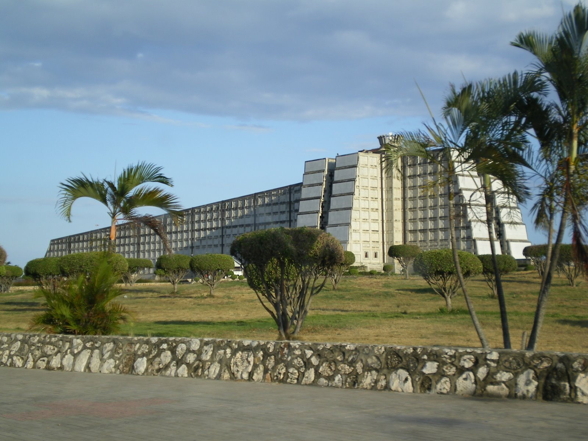
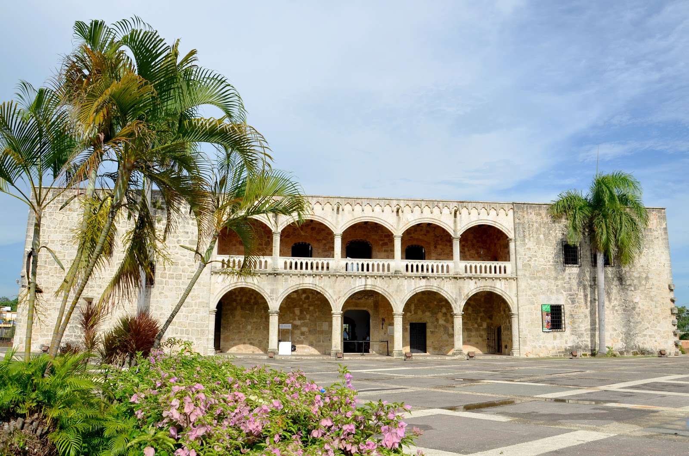
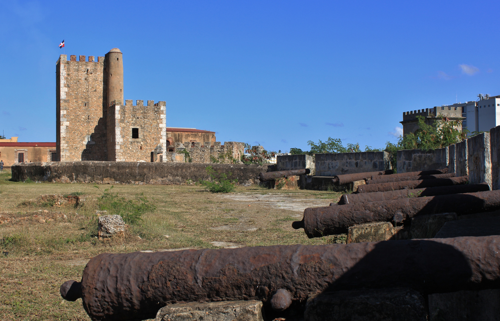

    <div class="pg places-page">
        <div class="uk-container uk-container-center">
            <div class="uk-width-small-1-1 uk-width-medium-4-5 uk-container-center">
                <h1 class="uk-text-center">Places to visit</h1>
                <div class="pg-content">
                  <div class="place">
                    
                    <h2>Columbus Lighthouse</h2>
                    <p>Columbus Lighthouse (Spanish: Faro a Colón) is a monument located in Santo Domingo Este, Dominican Republic, in tribute to Christopher Columbus.</p>
                    <p>Construction began in 1986 using plans drawn by Scottish architect J.L. Gleave in 1931, in time for the 500th anniversary of the Discovery of America, the monument was inaugurated in 1992. It was funded by the Latin American states and the total cost of construction was approximately US$70 million.</p>
                    <p>The monument's lighthouse-style features projecting beams of light, forming a cross shape, which are so powerful they can be seen from neighboring Puerto Rico.</p>
                    <p>Containing what are purported to be the remains of Columbus, the monument is both a mausoleum and a museum showcasing objects including a boat from Cuba and Columbian jewelry. Constructed of concrete, the monument is 680 feet (210 m) long.[3] Its architecture is cross-shaped and represents the Christianization of America.</p>
                  </div>

                  <div class="place">
                    
                    <h2>Columbus Alcazar</h2>
                    <p>Columbus Alcazar, located in Santo Domingo, Dominican Republic, is the oldest Viceregal residence in America, and forms part of the Colonial Zone of Santo Domingo World Heritage Site. The building houses the Museo Alcázar de Diego Colón, whose collection exhibits the Caribbean's most important ensemble of European late medieval and Renaissance works of art, which were acquired in the 1950s. </p>

                      <p>The Tapestry collection (spanning from the 15th to 17th centuries) is particularly important and unique in the Caribbean, and includes pieces produced by the Flemish Van Den Hecke family from cartouches created by Charles Le Brun. The Alcázar is the most visited museum in Santo Domingo.</p>
                  </div>

                  <div class="place">
                    
                    <h2>Ozama Fortress</h2>
                    <p>The Fortaleza Ozama (in Spanish; Ozama Fortress in English) is a sixteenth-century castle built by the Spanish at the entrance to Santo Domingo, Dominican Republic, and overlooking the Ozama River. Named after this river, the castle, also referred to as "La Fortaleza" or "The Fortress", is the oldest formal military construction of European origin in America.</p>
                  </div>

                  <div class="uk-text-center">
                    <a href="http://bit.ly/PyRegister" class="uk-button uk-button-large  button-primary">Register now!</a>
                  </div>
                </div>
            </div>
        </div>
    </div>
